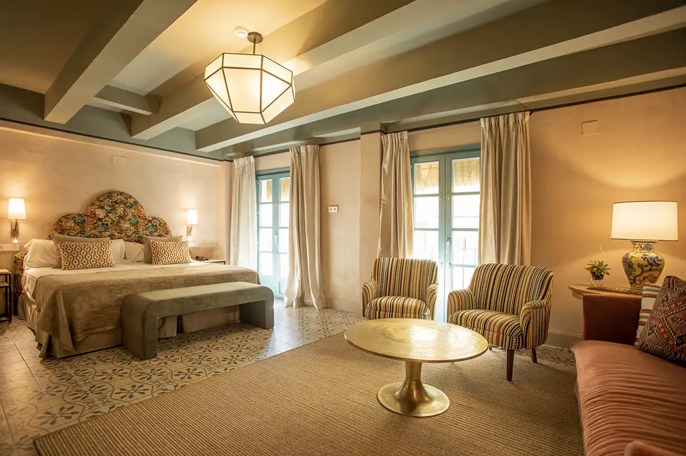
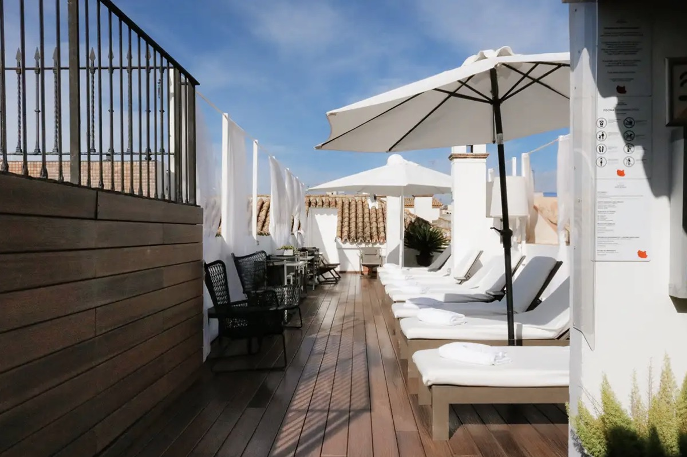
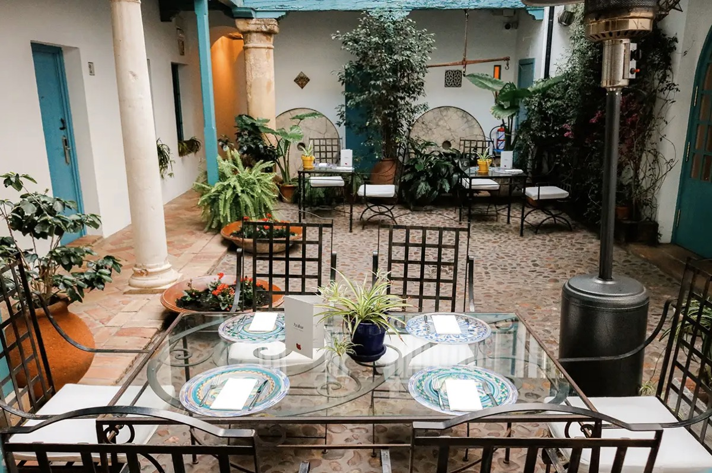

Hospes Las Casas del Rey de Baeza ✅
An 18th-century house in Santa Catalina, a quiet corner of the old town. Inside, it’s all courtyards, columns and plants.



Why here
It feels like Seville, not a city hotel. The tapas bars are a few minutes away, and the Alcázar is about 20 minutes on foot.
What’s waiting
- 🛏️ A Deluxe room for the three of us
- ☕ Breakfast in bed, every morning if we want it
- 🏊 Rooftop pool and terrace (Freya)
- 🧖 Bodyna spa, open 12:00–21:00
- 🍽️ Azahar, the restaurant, in the courtyard or on the roof
We’ll come back mid-Sunday for the pool and your massage, and end each evening on the roof.
Practical
- Address: Plaza Jesús de la Redención 2
- Check in from 15:00 · out by 12:00
- Phone: +34 954 56 14 96
- Airport: 8 km, a short taxi ride